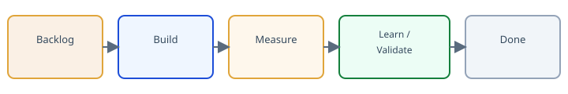
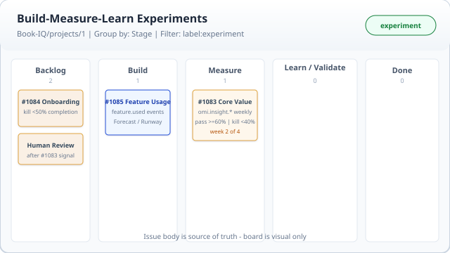

Build-Measure-Learn Onboarding
Full course — ~2.5–3 hours. Use browser Print → Save as PDF.
Introduction — why Build-Measure-Learn
~20 min
This module (SOP step 1)
- Explain validated learning vs shipping volume.
- Name BookIQ’s four core risky assumptions.
- Write your one-sentence riskiest-assumption statement (reuse in Module 7).
Full checklist: Experiment SOP
Hard truth
Most teams say they do Build-Measure-Learn but never kill anything. If Learn does not regularly produce kill, pivot, or persevere decisions from real data, you are doing theater — not learning.
Three terms you must know
Validated learning — progress backed by real evidence from real customers (or your agreed measure). Updating beliefs with data, not shipping volume or internal consensus alone.
Kill — a Learn decision to stop or drop the bet because numeric kill criteria were hit (or clearly will be). Kill is system success — you learned before wasting more build time. It is not personal failure.
Theater — going through Build-Measure-Learn motions without numeric criteria, real Measure, or willingness to kill.
Why Build-Measure-Learn
BookIQ is onboarding first customers. The goal is not to ship features faster — it is to test risky assumptions about whether customers get real value from OMI insights, human oversight, forecasts, and pricing.
The loop: Build the smallest test → Measure with pre-defined metrics → Learn (Persevere / Pivot / Kill). Optimize cycle time from hypothesis to decision.
BookIQ — four risky assumptions
These drive our first experiments (handoff §2):
- Customers act on OMI insights — not just glance at the dashboard.
- Human-reviewed insights add trust vs pure AI.
- Customers keep paying after novelty wears off (30–60 days).
- Forecast & Runway (and similar) are actually used and valued.
Every experiment ticket names one of these (or a sharper slice) as the hypothesis.
Do this now
Write one sentence using this pattern: “The riskiest assumption for BookIQ right now is [what must be true] because if it’s wrong, [what breaks for customers or the business].”
Example: “The riskiest assumption for BookIQ right now is that customers act on OMI weekly insights because if it’s wrong, we will lose trust and churn before pricing ever matters.” You will reuse your sentence in Module 7.
Failure modes
- Feature factory: velocity celebrated; Learn column empty.
- Vague hypotheses: “Improve onboarding” is not testable.
- Vanity metrics: logins and page views that cannot fail the bet.
Checklist
Self-check
What is the difference between shipping and validated learning?
Why must Learn produce kill/pivot/persevere decisions?
The Build-Measure-Learn loop & board
~20 min
This module (SOP steps 3 & 6 — prep)
You already know why we run experiments (Module 1). This module teaches how the board works — columns, labels, and our five initial BookIQ bets — so you can label cards and record Learn decisions later.
- Name all five Stage columns in order.
- Know all seven labels and when to use decision labels.
- Summarize all five BookIQ initial experiment tickets.
Full checklist: Experiment SOP
Hard truth
Learn / Validate is the most important column. If you are not making real decisions there — including kill when criteria hit — the whole system is broken.
Five columns (Stage field)

One GitHub issue = one experiment. Project board is visual only; the issue body is source of truth.
- Backlog — assumption queued; written hypothesis + numeric kill criteria before leaving.
- Build — smallest test shipping; Cursor skill chain applies when non-trivial.
- Measure — clock running; no new scope; weekly numbers posted on the issue.
- Learn / Validate — Persevere, Pivot, or Kill with evidence; apply a decision label.
- Done — decision recorded; next action filed (see SOP step 7).
Labels — when to use each
| Label | When |
|---|---|
experiment | Every BML issue — required. |
hypothesis | Optional filter while drafting or in Backlog. |
measure | Optional filter while in Measure column. |
learn | Optional filter while in Learn / Validate. |
persevere | Learn only — evidence supports continuing current strategy. |
pivot | Learn only — change hypothesis or approach; new or revised experiment. |
kill-candidate | Learn only — kill criteria hit or bet should stop (kill is success). |
Columns own phase. Phase labels are optional filters. Decision labels apply at Learn only — never at Backlog or Build.
BookIQ — five initial experiments
Each card below is one experiment ticket on the board. Read the one-line summary now — you will check yourself without reopening the docs.
Do this now
Pick one of the five tickets above. In your own words, write its hypothesis and kill criteria in one line each — without opening the draft links.
Failure modes
- Cards skip Measure — “we’ll know when we ship.”
- Learn holds vague retrospectives — no
persevere,pivot, orkill-candidatelabel. - Five half-baked experiments in Build instead of one good loop through Learn.
Checklist
Self-check
What must happen before a card leaves Backlog?
When do you apply kill-candidate?
Meet the board
~10 min
This module (board orientation)
The BML Board is already set up for Practical AI. You are not creating labels or projects in this module — you are learning to read the board you will run experiments on.
- Open the live BookIQ project board.
- Confirm Stage columns include Learn / Validate.
- Identify one experiment card and note its Stage and labels.
Full run checklist: Experiment SOP · Lead/ops setup (optional): Build_Loop_Kanban_Setup.md
Hard truth
Vanity metrics (logins, raw clicks) are not enough. We care whether customers make better financial decisions because of BookIQ.
What the board is
- GitHub Issues — one issue per experiment; the issue body is source of truth.
- GitHub Project — Kanban view grouped by Stage (not Status).
- Teaching board walkthrough: use the diagram below and the five week-1 drafts — same column names as the live board.
- Live board: Team Work — filter Ticket Type = BML.

Group by → Stage · Filter → label:experiment · One issue per card; body is source of truth.
Three week-one experiments to find
These are our week-one bets. Use the teaching drafts (always available); live issues are for Book-IQ members:
| Draft | Experiment | Why it matters | Live (members) |
|---|---|---|---|
| Ticket 1 | Core Value — OMI insights | Do customers act on weekly insights? | #1083 |
| Ticket 5 | Onboarding completion | Do completers engage more? | #1084 |
| Ticket 3 | Feature usage — Forecast / Runway | Which features are actually used? | #1085 |
No Book-IQ access? Use the draft links and board mock above — you are not blocked. Members: open the live board via appendix.
Where new tickets come from
When you draft an experiment later, use the teaching template in this repo: build-loop-experiment.md. You will practice filling it in Module 4.
Do this now
- Open the week-1 teaching drafts and the board mock diagram above.
- Name the five Stage columns in order: Backlog → Build → Measure → Learn / Validate → Done.
- Pick one draft (Ticket 1, 3, or 5). Write down: which column it would sit in on the board, its hypothesis in one line, and one kill criterion.
- Optional (Book-IQ members): open the live BML board from appendix and confirm Stage grouping matches.
Done when: you can point to one bet and say which column it belongs in and what it tests — using drafts alone is enough.
Failure modes
- Board grouped by Status instead of Stage — columns drift.
- Issues without
experimentlabel — filter breaks. - Treating this module as “set up GitHub” — setup is lead/ops; you orient and run.
Checklist
Ticket template & Build skills
~25 min
This module (SOP steps 2 & 4)
- Copy the exact six-section ticket template.
- Fill a scratch Ticket 1 with pass/kill metrics (before peeking at the example).
- Recite the four-skill Build chain and know when to skip to
/implementonly.
Full checklist: Experiment SOP
Hard truth
Do not jump straight to building on non-trivial work. Experiment quality depends on grilling and a clear spec before tickets. Do not substitute /to-issues + bare /tdd for the chain — /implement already owns TDD and review.
Exact ticket template (handoff)
## Hypothesis
What do we believe will happen?
## Build
What exactly are we building? What is the smallest version we can ship to test this?
## Measure
What specific metrics or data will we collect? How will we know if the hypothesis is validated or invalidated?
## Learn
What did we actually learn? What decision are we making? (Persevere / Pivot / Kill)
## Acceptance Criteria
- [ ] ...
- [ ] ...
## Technical Context / References
@relevant-files @folders (for /grill-with-docs)How to fill Measure: add numeric pass threshold, kill threshold, duration, and sample size. Example format: “≥60% weekly open+click · kill <40% · 4 weeks.”
How to write Acceptance Criteria
ACs describe observable “done” for the Build slice — what must ship so Measure can start. They do not replace Measure pass/kill numbers.
- Good: “Weekly insight email sends for all active tenants.” “
omi.insight.openedandomi.insight.actedevents fire.” - Bad: “Improve engagement” (not observable). “≥60% open rate” (belongs in Measure, not AC).
Do this now — draft before you peek
Copy the template above. Paste into a scratch doc or issue. Fill Hypothesis, Build, Measure (with pass/kill), and Acceptance Criteria for BookIQ Ticket 1 (Core Value — OMI insights) without opening the example or draft links below.
Ticket 1 tests whether customers actively read and act on OMI weekly insights — use what you learned in Module 2.
Cursor skill chain (Build column)

/grill-with-docs— prime with issue + folders; sharpen assumptions/to-spec— publish spec from grilled conversation (no re-interview)/to-tickets— tracer-bullet vertical slices with blockers/implement— one ticket at a time; runs/tdd+/code-review; commits
Tiny builds: skip to /implement (optional light grill).
Check your draft — BookIQ Ticket 1 (Core Value)
After you draft, compare your scratch ticket to this walkthrough. Adjust anything you missed.
Hypothesis: Customers actively read and act on OMI’s weekly insights.
Build: Confirm weekly delivery + omi.insight.* events — no new product scope.
Measure: ≥60% weekly open+click · kill <40% after 4 weeks.
Learn: Persevere / Pivot / Kill with evidence + kill-candidate if dead.
Full draft · Live #1083
Failure modes
- Template sections renamed — Cursor skills can’t find structure.
- Skipping grill on multi-PR builds — weak assumptions ship.
- Using
/prototypeor/wayfinderinstead of the Build chain.
Checklist
Running an experiment
~25 min
This module (SOP step 5)
You already drafted a ticket and know the Build skill chain (Module 4). Now add Measure — collecting only the evidence you pre-registered, and knowing what must exist before each column move.
- Know the gate for each column transition.
- Walk Ticket 1, 2, or 3 through all five columns on paper.
- Know Measure is data collection, not a dev queue.
Full checklist: Experiment SOP
Hard truth
The Measure phase must be taken seriously. If you treat it as a waiting room while you build the next feature, you are not doing Build-Measure-Learn.
Column gates
| Leaving… | Requires |
|---|---|
| Backlog → Build | Hypothesis + numeric kill criteria on issue |
| Build → Measure | Smallest test shipped; instrumentation or manual log path exists |
| Measure → Learn / Validate | Duration elapsed or kill threshold hit; weekly numbers posted |
| Learn → Done | Decision + evidence; one of persevere pivot kill-candidate |
BookIQ walkthrough — Ticket 2 (Human Review)
Hypothesis: Customers trust insights more when they know a human reviewed them.
Build: A/B or cohort — same insight content, one arm shows “human-reviewed” indicator. Badge/copy only unless review workflow is required.
Measure (3 weeks): trust/usefulness ratings + omi.insight.acted by variant. Kill: no meaningful difference.
Learn: If kill — stop investing in human-review marketing; if persevere — expand review surfacing.
Full draft · Backlog until Core Value (#1083) has signal.
BookIQ walkthrough — Ticket 3 (Feature Usage)
Hypothesis: Forecast & Runway tools are the most valuable features.
Build: Tag routes with feature.viewed / feature.used / feature.returned for forecast, runway, plus baselines — measurement only, no new Forecast/Runway scope.
Measure (30 days): top 3 features ≥70% of usage; Forecast and/or Runway in top tier if hypothesis holds. Kill: low usage and low feature.returned.
Learn: Double-down on winners, pivot messaging, or kill roadmap emphasis on zombie features.
Full draft · Live #1085
Build column — when code ships
Non-trivial: /grill-with-docs → /to-spec → /to-tickets → /implement.
Measure column: no code unless instrumentation is broken — update issue with weekly numbers.
Do this now
Take your scratch Ticket 1 from Module 4 (or pick Ticket 2 or 3 below). On paper, walk it through all five columns. For each column, write one artifact that must exist before the card can move (e.g. Backlog: hypothesis + kill on issue; Measure: weekly numbers posted).
Failure modes
- Measure without pre-registered pass/kill — any result “wins.”
- Building new features during Measure — scope creep.
- Learn without customer evidence — vibes-based persevere.
Checklist
Self-check
When can you write code during Measure?
Operating the board
~20 min
This module (SOP steps 6 & 7)
You know column gates and Measure discipline (Module 5). This module adds Learn decisions, weekly ops, and what happens after Done — including when to kill, pivot, or persevere.
- Know the WIP limit and weekly rhythm.
- Walk through Tickets 4 and 5 sequencing rules.
- Count active cards on the live board.
Full checklist: Experiment SOP
Hard truth
If you have not killed something in 60 days, you failed the system. One good experiment beats five half-baked features.
WIP limits
- Max 3 active in Build + Measure combined (team of 3).
- Clear Learn / Validate before pulling new Builds from Backlog.
- Week-1 live priority: Core Value, Onboarding, Feature Usage — not all five at once.
Weekly cadence (30 min max)
- Move overdue cards to Learn / Validate.
- For each Learn card: Decision + Evidence on issue; apply decision label; → Done.
- If Learn had zero decisions for 2+ weeks → fix Learn before shipping more.
BookIQ walkthrough — Ticket 5 (Onboarding Completion)
Hypothesis: Customers who complete full onboarding will have significantly higher engagement.
Build: Define canonical steps (invite_accepted → tenant_connected → first_dashboard_view → first_omi_interaction). Instrument onboarding.* — no UX redesign until Measure shows <50% completion or no lift.
Measure (3–4 weeks): ≥50% completion within 14 days; completers higher on omi.insight.acted vs non-completers. Kill: <50% completion rate.
Learn: Week-1 priority alongside Core Value — sequence before Pricing (#4) and Human Review (#2) if engagement is unknown.
Full draft · Live #1084
BookIQ walkthrough — Ticket 4 (Pricing Sensitivity)
Hypothesis: Customers are willing to pay $399+/month after the first 60 days.
Build: Renewal conversation script + structured feedback capture at day 45–60. No new pricing UI unless required.
Measure (45–60 days): renewal rate without heavy discounting; price objection themes. Kill: strong pushback on pricing from multiple customers.
Learn: Do not start until cohort approaches renewal window — starting early is theater.
Full draft · Backlog until day 45–60 data exists.
BookIQ anti-patterns
- Stuck Learn: #1083 in Measure forever with no weekly
omi.insight.*tallies. - Vanity: celebrating dashboard logins while
omi.insight.actedis zero. - Zombie persevere: Forecast/Runway roadmap full steam while Ticket 3 shows low
feature.returned.
Metrics dictionary: Build_Loop_Metrics_Tracking.md
Do this now
Scan the live board. Count cards in Build + Measure. If >3, identify what moves to Learn or Backlog.
Failure modes
- Learn queue as parking lot — no decisions for weeks.
- Starting Pricing (#4) before day 45–60 cohort data exists.
- Human Review (#2) before Core Value (#1) shows engagement signal.
Checklist
First live ticket — full SOP on the board
~30 min to start · Build continues after
This module
Run the full Experiment SOP on a real card on Team Work (Ticket Type = BML). No practice issues, no scratch repo, no Discussions draft — the GitHub issue on bookiqv1-rc is the ticket.
- Bring forward your Module 1 riskiest-assumption sentence.
- Get lead approval on one live backlog experiment (self-chosen pick).
- Sharpen, move, and Build on that issue through the skill chain.
Hard truth
Finishing this module means you started real board work — it does not auto-certify you. A lead reviews your live issue (kill criteria sharp enough to actually kill the bet, smallest Build, sensible skill chain). Certification gate: Build started or first PR merged on the real ticket.
SOP on the live issue — what to do
- Pick + approve — choose one live backlog card; lead confirms WIP ≤3 and sequencing. Teaching drafts below are shape examples only — sharpen the live issue body, do not copy-paste.
- Assumption — refine hypothesis on the issue from your Module 1 sentence.
- Ticket — all six sections on the live issue; numeric pass/kill in Measure.
- Backlog —
experimentlabel; stay in Backlog until hypothesis + kill criteria are written. - Build — move to Build; run
/grill-with-docs→/to-spec→/to-tickets→/implement(/tdd+/code-reviewinside implement; tiny builds may skip to/implement). - Ship smallest test — module gate: Build in progress or first PR merged.
- Stretch: Measure — move to Measure; post week-0 baseline on the issue.
Document column moves and weekly numbers as comments on the live issue. Learn → Done is ongoing board ops — see next steps.
Fill guides (H / B / M / L)
H: Customers actively read and act on OMI weekly insights. B: Weekly delivery + omi.insight.* events. M: ≥60% open+click weekly · kill <40% · 4 weeks. L: Persevere / Pivot / Kill + decision label.
H: Higher trust when human-reviewed. B: A/B badge on same insight content. M: trust ratings + omi.insight.acted by variant · 3 weeks · kill if no difference. L: Stop review marketing or expand surfacing.
H: Forecast & Runway are top-valued features. B: feature.used / feature.returned tags only. M: top 3 ≥70% usage · 30 days · kill low Forecast/Runway + low return. L: Double-down, pivot messaging, or kill roadmap emphasis.
H: Customers pay $399+/mo after 60 days. B: Renewal script + structured feedback at day 45–60. M: renewal without heavy discount · kill on strong price pushback. L: Hold price, adjust packaging, or pilot tier — start only at renewal window.
H: Completers engage significantly more. B: Canonical onboarding steps + onboarding.* events. M: ≥50% complete in 14 days · kill <50% · compare omi.insight.acted cohorts. L: Week-1 priority with Core Value; sequence before Pricing (#4).
Do this now
- Open Team Work — filter Ticket Type = BML (or your My work view); confirm Status columns.
- Get lead approval on your pick; sharpen the live issue with the six-section template.
- Run SOP steps on that issue through Build (skill chain + smallest test).
- Submit the live issue URL on certification for lead review.
Failure modes
- Creating a practice issue anywhere instead of using the live board card.
- Moving a card without lead-approved pick or WIP >3.
- Copy-pasting a teaching draft onto the live issue without sharpening.
- Measure section without numeric kill threshold.
- Technical Context empty — grill-with-docs has nothing to prime.
Checklist
Build-Measure-Learn quick reference
printable one-pager
Running an experiment? Use the full numbered checklist: Experiment SOP →
Columns (Stage)
Backlog → Build → Measure → Learn / Validate → Done
Labels
experiment hypothesis measure learn persevere pivot kill-candidate
Columns own phase. Decision labels at Learn only.
WIP & cadence
- Max 3 active in Build + Measure
- Weekly 30 min: overdue → Learn; decide; label; Done
- 2+ weeks with zero Learn decisions = theater — fix before new Builds
Column gates
- Backlog → Build: hypothesis + kill criteria
- Build → Measure: smallest test shipped + measure path
- Measure → Learn: duration done or kill hit; numbers posted
- Learn → Done: decision + evidence + label
Ticket template
## Hypothesis
What do we believe will happen?
## Build
What exactly are we building? What is the smallest version we can ship to test this?
## Measure
What specific metrics or data will we collect? How will we know if the hypothesis is validated or invalidated?
## Learn
What did we actually learn? What decision are we making? (Persevere / Pivot / Kill)
## Acceptance Criteria
- [ ] ...
- [ ] ...
## Technical Context / References
@relevant-files @folders (for /grill-with-docs)Fill Measure with pass/kill table + duration. Prime grill: @folders in Technical Context.
Build skills (required order)
/grill-with-docs → /to-spec → /to-tickets → /implement (/tdd + /code-review inside)
Tiny build: /implement only. No /to-issues substitute.
Hard truths
- Most teams never kill anything — we will.
- Learn / Validate is the most important column.
- Vanity metrics ≠ validated learning.
- 60 days without a kill = you failed the system.
BookIQ — five tickets (handoff §6)
- Core Value: ≥60% open+click weekly · kill <40% · 4 weeks (#1083)
- Human Review: higher trust/usage for human-reviewed vs AI · 3 weeks · kill if no difference
- Feature Usage: top 3 features ≥70% usage · 30 days (#1085)
- Pricing: renewal at $399+/mo · day 45–60 · kill on strong pushback
- Onboarding: completers vs non-completers engagement · kill <50% completion (#1084)
Certification
lead-reviewed
Certification means you ran the Experiment SOP on a real live board ticket — strong issue body, real Build work, no theater. Your lead signs off after reviewing your Module 7 live issue. Next steps cover ongoing board ops after approval.
Checklist
Keep the board honest
Module 7 started your first real experiment. After lead sign-off, stay on the BML board — finish Build, run Measure, make Learn decisions, claim the next bet when WIP allows.
1 · Finish your first ticket
Measure → Learn → Done
Your Module 7 live issue does not stop at Build. When the smallest test ships:
- Measure — post weekly numbers on the issue; no new scope unless instrumentation is broken.
- Learn — when duration elapses, decide persevere / pivot / kill; apply decision label.
- Done — record next action; archive theater.
2 · Operate the board
Weekly rhythm + WIP
- Max 3 active cards in Build + Measure combined.
- Weekly Learn review — decisions before new Builds.
- If Learn produces no persevere / pivot / kill for 2+ weeks, fix the system before shipping more scope.
- Claim the next live experiment only when WIP allows — lead approves pick and sequencing.
3 · BookIQ live resources
Board, tickets, metrics
4 · Improve the course
Tickets + retro
- Propose course or SOP improvements as issues on Practical-Office/bml-onboarding.
- Bring one Learn decision that worked (or did not) to the next BML ops retro.
Board failure modes
- Practice or duplicate issues instead of working the live backlog card.
- Copy-pasting teaching draft text without sharpening for the real bet.
- Measure without numeric kill threshold or vanity metrics as success criteria.
- Skipping Measure or Learn — parking cards with no decision label.
- WIP >3 — claiming another experiment before finishing or parking active cards.
Shortcuts
- Quick reference — print one-pager
- Experiment SOP — seven-step checklist
- grill-with-docs · to-spec · to-tickets · implement
- Printable full course